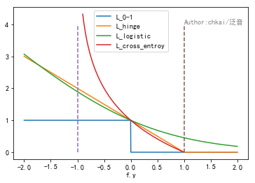

主要内容： 0-1,Hinge,Logistic,Cross Entropy,Square,Absolute,Huber 简述： 损失函数刻画了模型与训练样本的匹配程度。
分类损失
 1. 对于二分类问题，Y={1,-1}，我们希望\(sign\) \(f(x_i,\theta)=y_i\)
0-1损失：\(L_{0-1}(f,y)=1_{f.y\leq0}\) 最自然的损失函数是0-1损失，表示的是，当且仅当预测不正确的时候取值为1，否则取值为0。该损失函数能够直观的刻画分类的错误率，但是由于其非凸、非光滑的特点，使得算法很难直接对该函数进行优化。
Hinge损失：\(L_{hinge}(f,y)=max\{0,1-f.y\}\) Hinge损失函数是0-1损失函数相对紧的凸上界，且当\(f.y\leq1\)时候,该函数不对其做任何处罚。由于Hinge损失在f.y=1处不可导，因此不能使用梯度下降算法优化，而是使用次梯度下降法。
Logistic损失函数：\(L_{logistic}=log_2(1+exp(-f.y))\) Logistic损失函数也是0-1损失函数的凸上界，且该函数处处光滑，因此可以使用梯度下降法进行优化。但是，该函数对所有样本点都做惩罚，因此对异常点更为敏感。
Cross Entropy：\(L_{cross\_entropy}=-log_2((1+f.y)/2)\) 交叉熵损失函数是常用的二分类损失函数。交叉熵损失函数也是0-1损失的光滑凸上界。
回归损失
1.对于回归问题,我们期望\(f(x_i,\theta)\approx y_i\)
Square损失：\(L_{square}(f,y)=(f-y)^2\) 平方损失函数是光滑函数，能够使用梯度下降法优化。然而当预测值距离真实值越远时，平方损失函数的惩罚力度越大，因此对异常点比较敏感。
Absolute损失：\(L_{absolute}(f,y)=|f-y|\) 绝对损失函数相当于在做中值回归，相比做均值回归的平方损失函数，绝对损失函数对异常点更鲁棒。但是，绝对损失函数在f=y处无法求导。
Huber损失：\(L_{huber}(f,y)=\left\{\begin{array}{l}{(f-y)^2, |f-y|\leq\delta} \\ {2\delta |f-y|-\delta ^2, |f-y|>\delta }\end{array}\right\}\) Huber损失函数在|f-y|较小时为平方损失，在|f-y|较大的时采用线性损失，处处可导，且对异常点鲁棒。